창원 세미웨딩 가족사진 — 드레스 입은 딸과 정장 입은 아들이 한자리에
2026-10-21 발행
창원 세미웨딩 가족사진은 결혼식 사진과 다릅니다. 예식은 하루지만, 이 사진은 가족이 한자리에 모이는 날입니다. 딸은 드레스를 입고, 아들은 정장을 입고, 어머니는 원피스를 입습니다. 예순이 넘은 부모님도 함께 서십니다. 상남동 스튜디오에서 이런 날을 자주 맞습니다. 오늘은 최근에 찍은 세미웨딩 가족사진 열두 장으로 이야기를 풀어 보겠습니다.
세미웨딩이라는 말이 조금 낯설 수 있습니다. 정식 웨딩 촬영처럼 신랑 신부가 주인공인 사진이 아니라, 온 가족이 조금 차려입고 함께 남기는 사진입니다. 결혼기념일, 회갑, 환갑, 혹은 특별한 이유 없이. 이유가 없어도 좋습니다. 가족이 다 같이 옷을 맞춰 입는 날이면 충분합니다.
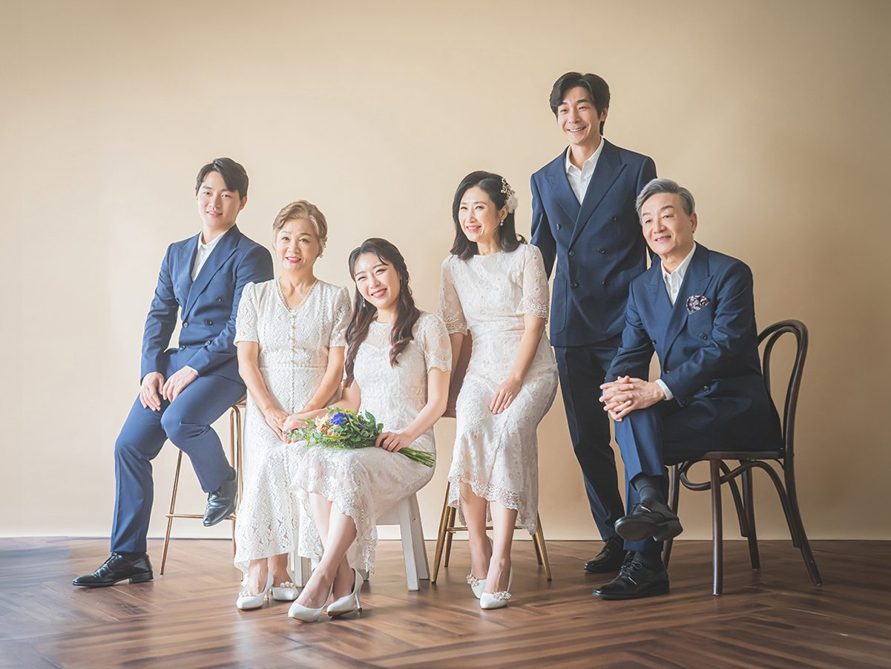
첫 사진은 여섯 사람입니다. 남성 세 명이 네이비 정장을, 여성 세 명이 흰 레이스 드레스를 입었습니다. 배경은 베이지 벽에 짙은 갈색 헤링본 바닥. 이 조합은 십 년이 지나도 낡지 않습니다. 네이비와 흰색은 사진에서 가장 안전한 조합이고, 베이지 배경은 그 조합을 부드럽게 받아 줍니다.
옷을 맞출 때 가장 많이 받는 질문이 "드레스는 어디서 구하나요"입니다. 스튜디오 의상실에 있습니다. 흰 레이스 드레스는 사이즈와 기장이 여러 가지로 준비되어 있고, 남성 정장은 네이비·베이지·차콜 세 계열이 있습니다. 아이들 드레스도 있습니다. 다만 인원이 많으면 미리 알려 주셔야 사이즈를 맞춰 둘 수 있습니다.
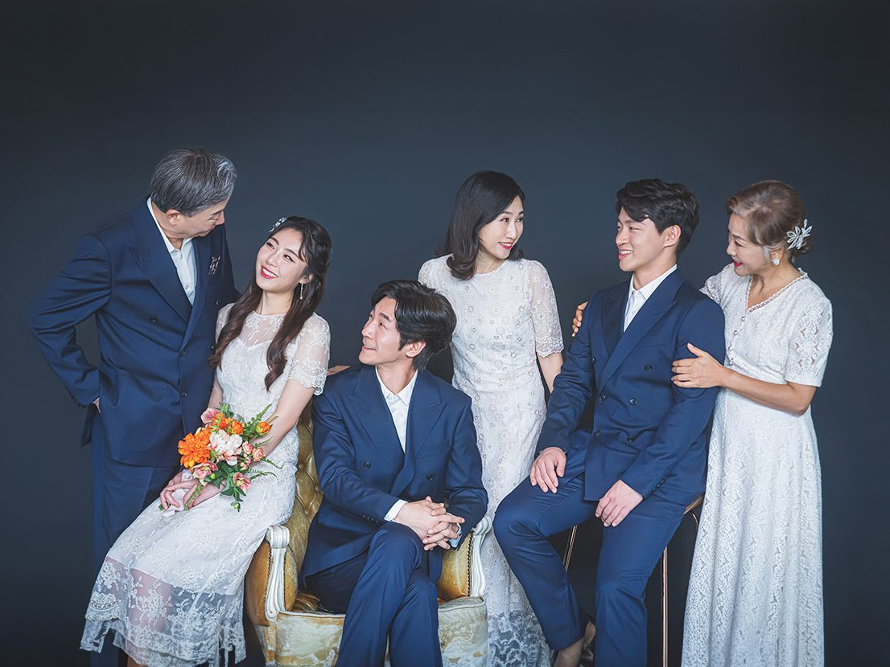
두 번째는 같은 가족을 어두운 회색 배경에서 찍었습니다. 흰 드레스가 훨씬 밝게 떠 보입니다. 같은 옷, 같은 사람인데 배경 하나로 사진의 무게가 달라집니다. 어두운 배경은 사진을 조금 차분하게 만들고, 밝은 배경은 경쾌하게 만듭니다. 두 장을 다 남기시길 권합니다.
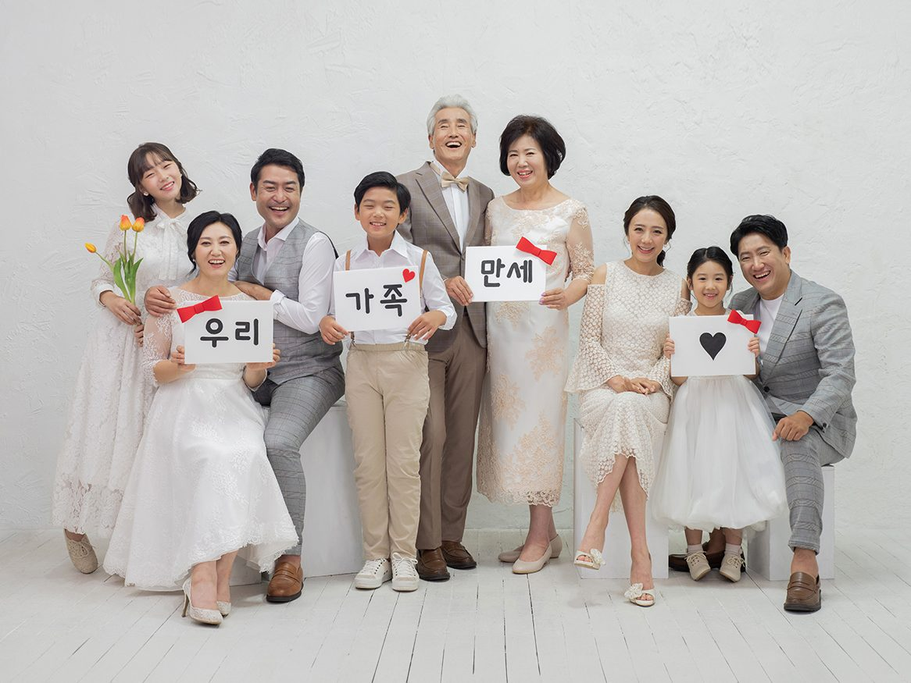
세 번째는 세대 가족 여덟 명입니다. 할머니와 할아버지, 성인 네 명, 아이 둘. 손에는 팻말과 튤립이 들려 있습니다. 팻말에는 '우리', '가족', '만세'라고 적혀 있습니다. 소품은 이렇게 하나면 충분합니다. 글자가 들어간 팻말은 사진에 이야기를 붙여 줍니다.
아이가 있는 세미웨딩 촬영은 순서가 중요합니다. 아이는 한 시간을 넘기지 못합니다. 그래서 아이가 가장 잘 웃는 시간에 아이 컷을 먼저 찍습니다. 그다음 어른들 컷, 마지막으로 전원 컷. 아이가 지쳐서 우는 사진도 한 장쯤은 남습니다. 그것도 나중에 웃으며 보게 됩니다.
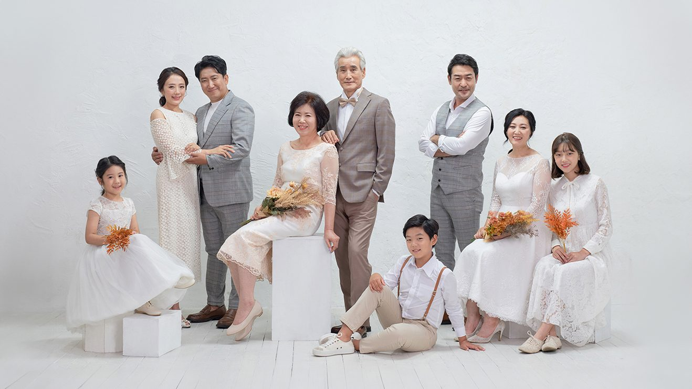
네 번째도 여덟 명입니다. 이번에는 흰 배경에 흰 드레스, 베이지와 그레이 수트. 배경과 옷 색이 비슷하면 사진이 하나의 덩어리처럼 보입니다. 이런 사진은 액자에 넣었을 때 벽과 잘 어울립니다. 대신 표정이 흐려질 수 있어서, 조명을 조금 더 넣고 인물마다 위치를 정확히 잡습니다.
단체 사진에서 자주 생기는 문제가 있습니다. 뒷줄 사람의 얼굴이 가려지는 것입니다. 그래서 키 순서로 줄을 세우되, 부부는 붙여 앉힙니다. 앞줄은 앉고 뒷줄은 서고, 맨 뒷줄은 살짝 옆으로 비켜 서게 합니다. 이렇게 세 줄이면 대개 여덟에서 열 명까지 한 프레임에 들어갑니다.
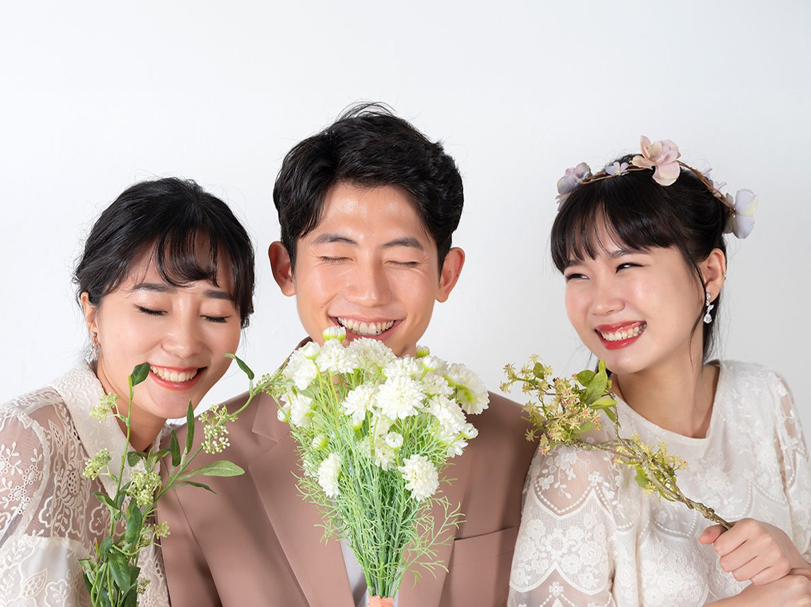
다섯 번째는 젊은 세 사람입니다. 남자는 갈색 수트, 여성 둘은 흰 레이스 원피스. 세미웨딩 사진은 꼭 가족 전체가 아니어도 됩니다. 남매끼리, 부모님과 딸만, 혹은 손주와 할머니만. 가족사진을 찍으러 오셨는데 이런 컷이 더 좋았다고 하시는 분들이 많습니다.
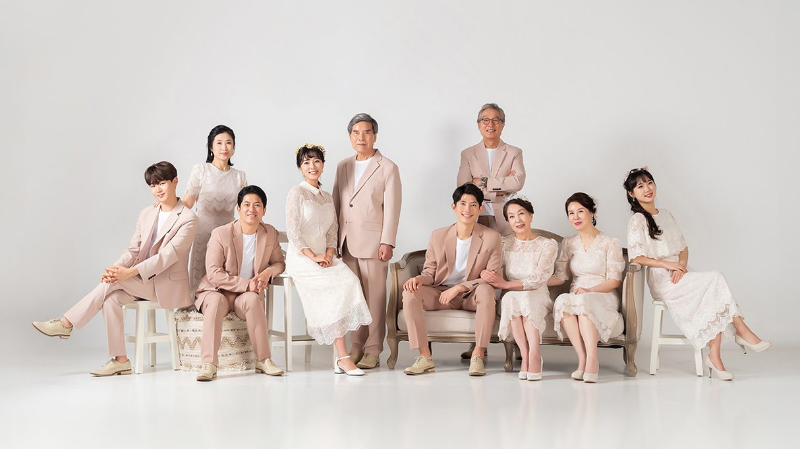
여섯 번째는 아홉 명입니다. 이 정도면 스튜디오가 꽉 찹니다. 의자를 몇 개 놓고, 나머지는 서게 합니다. 이때 남성은 베이지 수트로, 여성은 화이트 레이스로 통일했습니다. 색을 두 가지로만 나누면 아무리 인원이 많아도 사진이 정돈됩니다.
세미웨딩에서 색을 정하는 방법은 세 가지입니다. 첫째, 남성은 어두운 색, 여성은 흰색. 가장 안전합니다. 둘째, 모두 베이지 계열. 부드럽고 따뜻합니다. 셋째, 민트나 그레이 같은 한 가지 색을 포인트로. 조금 더 젊은 느낌이 납니다. 어느 쪽이든 세 가지 색을 넘기지 마세요.
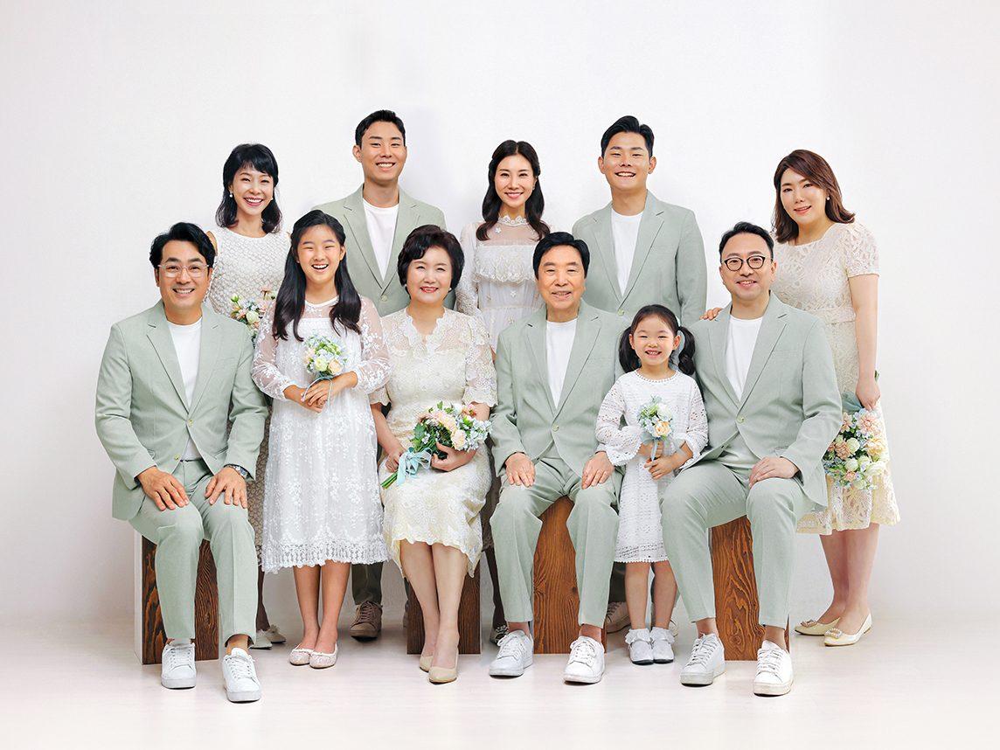
일곱 번째는 열한 명입니다. 민트빛 수트와 흰 레이스 드레스. 이 조합은 사진에서 시원해 보입니다. 앞줄은 스툴에 앉고, 뒷줄은 서고, 맨 뒤는 살짝 비켜 섰습니다. 열한 명이 넘어가면 촬영 시간을 세 시간으로 잡습니다. 준비와 이동에 시간이 더 들기 때문입니다.
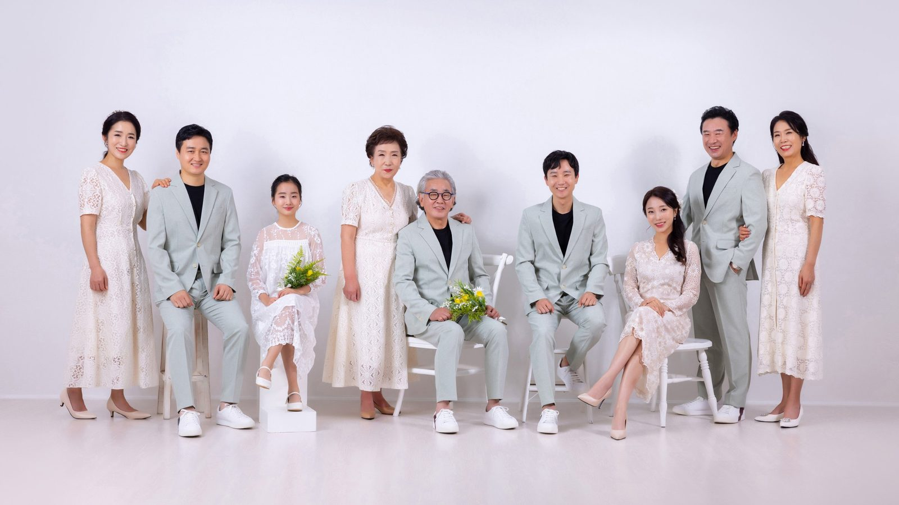
여덟 번째는 세 세대가 함께한 사진입니다. 할아버지와 할머니, 부모, 그리고 아이들. 세대가 섞이면 옷 색을 맞추기가 어렵습니다. 이때는 밝은 쪽으로 통일하시길 권합니다. 흰색과 민트, 베이지처럼 밝은 색은 나이를 가리지 않습니다. 어르신이 입어도 단정하고, 아이가 입어도 어색하지 않습니다.
어르신이 함께 오시면 준비가 조금 더 필요합니다. 이동 시간을 넉넉히 잡고, 촬영 중간에 앉아 쉬실 의자를 준비합니다. 계단이 있으면 미리 알려 주세요. 엘리베이터로 바로 올라오실 수 있게 안내해 드립니다. 상남동 롯데빌딩 2층이라 주차장에서 문까지 평지입니다.
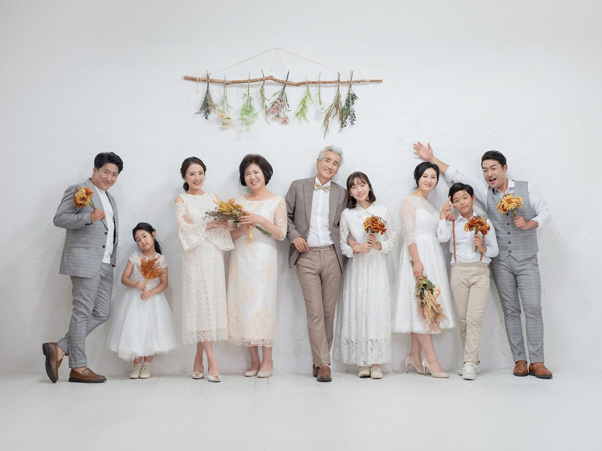
아홉 번째는 벽에 마른 꽃을 걸고 찍었습니다. 계절마다 다른 꽃을 겁니다. 봄에는 라넌큘러스, 가을에는 억새와 마른 꽃. 같은 벽인데 계절이 바뀝니다. 세미웨딩 사진은 이렇게 배경 하나로도 기억이 달라집니다. 그래서 같은 가족이 해마다 오셔도 사진이 겹치지 않습니다.
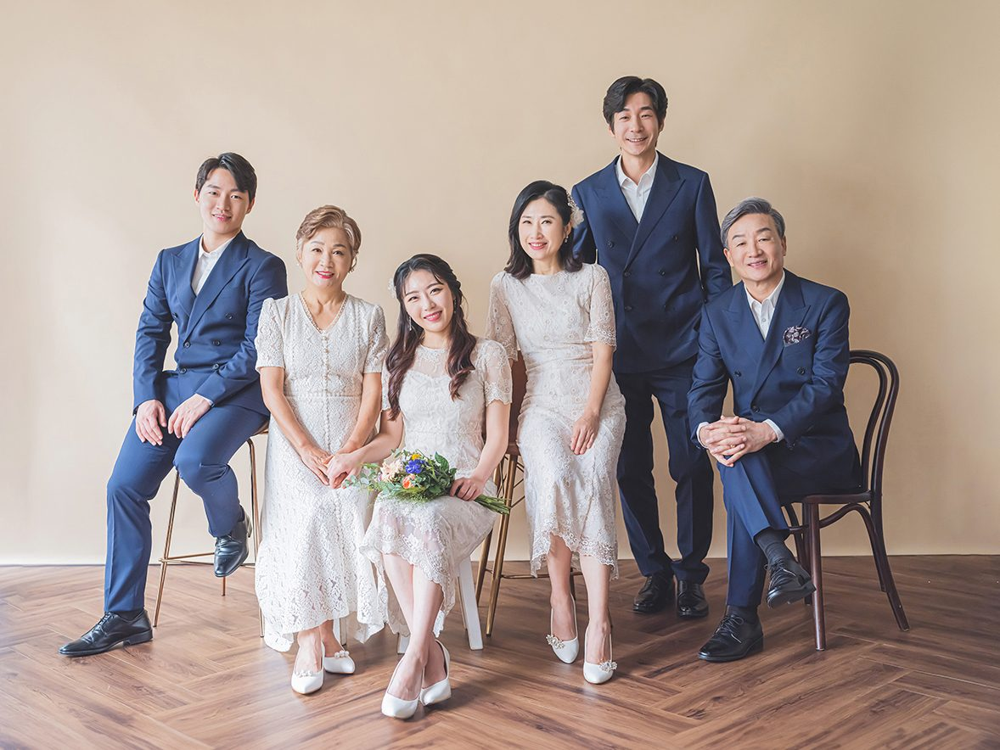
열 번째는 다시 네이비와 흰색입니다. 헤링본 원목 바닥이 사진의 아래를 단단하게 잡아 줍니다. 바닥이 나오는 사진은 전체 키를 정확히 보여 주기 때문에, 나중에 아이가 자란 것을 비교하기에 좋습니다. 해마다 같은 자리에서 찍으면 그 변화가 한눈에 보입니다.
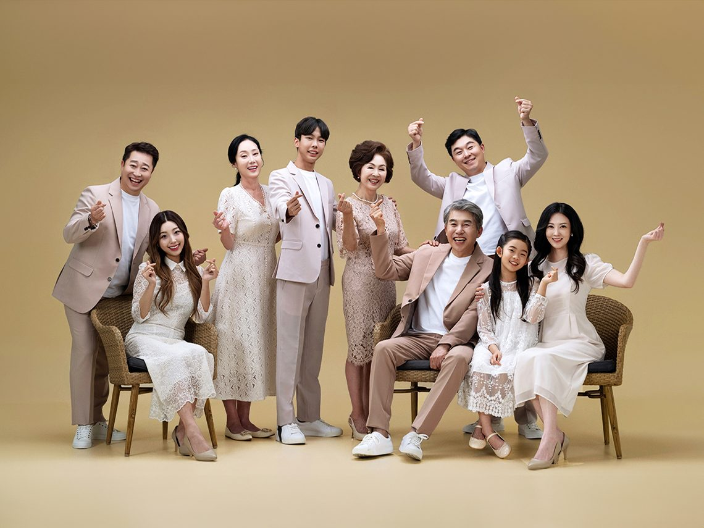
열한 번째는 조금 가볍게 찍었습니다. 손가락 하트, 뻗은 팔, 장난스러운 표정. 세미웨딩이라고 해서 끝까지 차려 있을 필요는 없습니다. 정돈된 컷을 먼저 찍고, 마지막에 이런 컷을 찍습니다. 순서를 바꾸면 처음부터 흐트러져서 정돈된 컷을 건지기 어려워집니다.
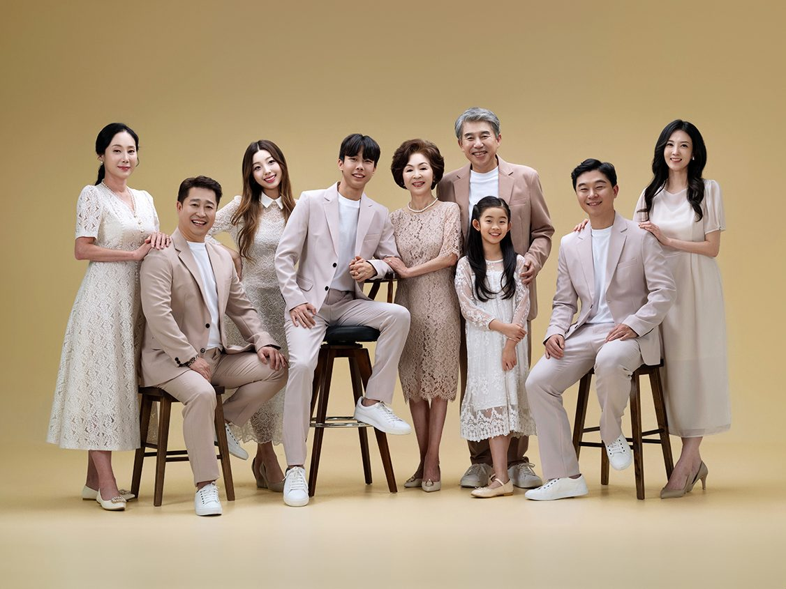
마지막은 한 줄로 세워 찍었습니다. 아홉 명이 나란히 서면 사진이 길어집니다. 이런 사진은 거실 긴 벽이나 식당 쪽 벽에 잘 맞습니다. 가로로 긴 액자를 주문하실 때는 벽의 폭을 재어 오시면 비율을 함께 정해 드립니다.
촬영은 인원에 따라 두 시간에서 세 시간입니다. 사진을 고르는 시간은 따로 한 시간쯤 필요합니다. 인원이 많으면 고르는 시간도 길어집니다. 그래서 큰 가족 촬영은 오전에 시작하시길 권합니다. 점심을 먹고 오후에 사진을 고르시면 하루가 편안하게 끝납니다.
드레스와 정장은 스튜디오에서 대여합니다. 따로 준비하실 필요는 없습니다. 다만 사이즈를 미리 알려 주시면 더 잘 맞는 옷을 준비해 둘 수 있습니다. 아이들 옷은 성인 옷과 톤을 맞춰 드립니다. 부모님 옷은 편한 신발을 챙겨 오시면 촬영이 훨씬 수월합니다.
창원 세미웨딩 가족사진은 상남동 롯데빌딩 2층에서 찍습니다. 예약과 상담은 전화 055-287-8022 또는 카카오채널로 하시면 됩니다. 인원과 연령대, 원하시는 색 분위기를 알려 주시면 의상과 동선을 미리 준비해 두겠습니다. 처음 오시는 날, 가족이 한자리에 모이는 것만으로도 사진은 절반쯤 완성됩니다.
사랑이야기 스튜디오 창원점 / 주소: 경남 창원시 성산구 원이대로 652, 상남동 롯데빌딩 2층 / 전화: 창원점 055-287-8022, 의령점 055-574-3706 / 홈페이지: lovestorykim.com / 인스타그램: @lovestorychangwon / 운영: 김작가
자주 묻는 질문
Q. 드레스와 정장은 준비해 가야 하나요?
A. 스튜디오 의상실에서 대여합니다. 흰 레이스 드레스와 네이비·베이지·차콜 수트, 아이들 드레스까지 준비되어 있습니다. 인원과 사이즈를 미리 알려 주시면 맞춰 둡니다.
Q. 세대가 섞여 있어도 어울릴까요?
A. 밝은 색으로 통일하시면 세대가 섞여도 자연스럽습니다. 흰색·베이지·민트 계열이 무난하고, 어르신은 편한 신발을 챙겨 오시면 좋습니다. 촬영 중간에 앉아 쉬실 자리도 준비합니다.
Q. 촬영 시간은 얼마나 걸리나요?
A. 여섯 명까지는 두 시간, 여덟 명이 넘으면 세 시간 정도입니다. 사진을 고르는 시간은 따로 한 시간쯤 필요합니다. 큰 가족은 오전에 시작하시면 하루가 편안합니다.

오시는 곳
사랑이야기창원점
- 주소 경남 창원시 성산구 원이대로 652, 상남동 롯데빌딩 2층
- 전화 055-287-8022
- 영업시간 오전 10:00 ~ 오후 7:00
- 예약 전화 상담 · 카카오톡 채널
- 주차 건물 지하 주차장
김작가사진이야기 의령
- 주소 경남 의령군 궁류면 청정로 1188
- 전화 055-574-3706
- 영업시간 오전 10:00 ~ 오후 7:00
- 예약 전화 상담 · 카카오톡 채널
- 주차 전용 주차장
이 글에 한마디
댓글창을 준비하고 있습니다. 그동안 궁금한 점은 카카오채널로 남겨 주시면 바로 답변드립니다.
카카오채널로 한마디 남기기